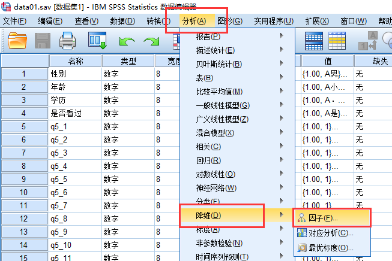
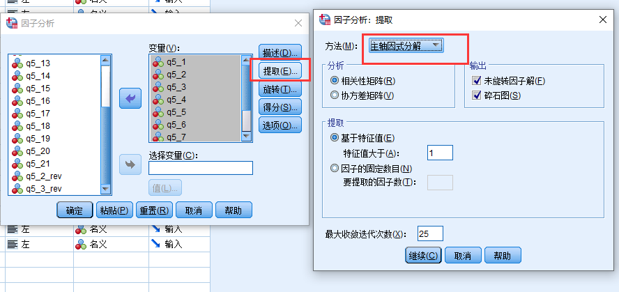
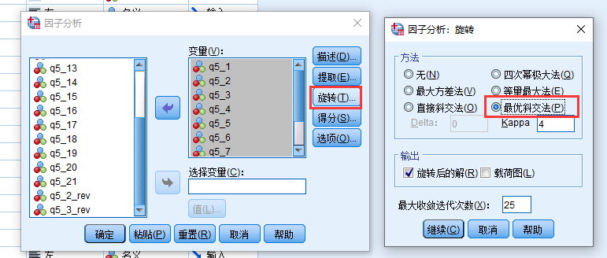
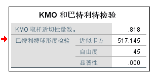
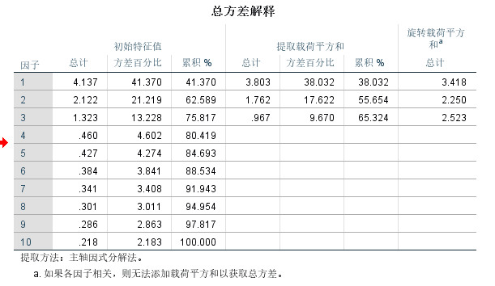
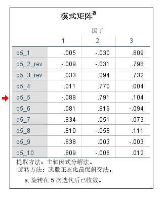
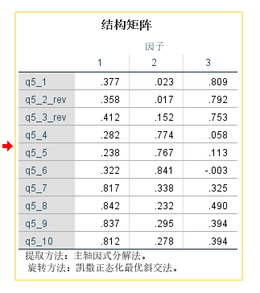

什么是效度
效度指的是量表的题目能够测量你所声称的概念, 比如幸福感量表, 效度高指的是幸福感量表能够测量人的幸福感。
因为量表往往测量的是一种主观概念, 不像客观概念那样可以直接的判断测量的准确性, 所以我们需要通过间接的方法验证准确性。
效度与因子分析往往放到一起说, 因为在大部分论文中都是使用因子分析来验证效度, 因为我们的一系列教程都是以写论文为目的, 所以我们这部分也主要以讲解因子分析为主。
效度的举例
- Face validity(表面效度): 看起来像
- Content validity(内容效度): 专家看起来像, 有时候会使用一些专家评分来量化
- 结构效度: 因子分析结果满足理论假设
- Convergent validity & discriminant Validity (聚合和区分效度):与相关的量表相关高,与不想关的量表相关低
- Criterion-related validity 校标效度: 求量表与其他指标的相关性
结构效度
探索性因子分析是用来证明结构效度的一种通用的统计方法。EFA是一种数据降维技术，它使用一种称为主成分分析的统计技术，根据上述的双变量相关矩阵，将给定的一组项目汇总为较小的一组因子。这些因素在理想情况下应该与我们试图衡量的基础理论构造相对应。
也就是说提取因子数目与理论一致, 并且理论上相同因子下题目(变量)聚合到一起, 不同理论上因子的题目聚合到不同的因子上。
因子提取的一般规范是每个提取的因子的特征值应大于1 (Kaiser, 1960).。然后，可以使用正交或倾斜旋转技术旋转提取的因子，以生成因子权重。
聚合和区分效度
属于同一因子的题目在该因子上载荷应当超过0.6，或者alpha信度大于0.7, 平均方差提取量AVE超过0.5。 而对于区别效度，题目在非属因子上的载荷应当低于0.3, 或者 很多论文中会求因子之间的相关性,
区别效度主要是AVE的平方根大于这个因子与所有其他因子的相关系数。
共同方法偏差
共同方法偏差不是效度, 但是影响效度。
共同方法偏差（CMB）是由于测量环境/被试本身倾向/测量工具等导致的不同题目(变量)之间具有相关性。举例来说, 有些被试喜欢评高分, 有些被试喜欢评低分, 不管什么样的题目, 被试这种倾向性都会导致题目之间的相关性被高估。
检测你的研究数据是否存在CMB最简单的方法就是Harman的单因子方法: 使用所有题目(变量)进行EFA, 如果第一个因子所能解释的方差超过50%就可以认为你的数据存在CMB。
效度分析的流程
探索性因子分析流程
因子分析样本量
因子分析是一项需要大量样本的方法。因子分析基于变量的相关矩阵，并且相关通常需要较大的样本量才能稳定。 Tabachnick和Fidell（2001，第588页）引用了Comrey和Lee（1992）关于样本量的建议：50例非常差，100例差，200例公平，300例很好，500例非常好，1000例以上是极好的。根据经验，为避免计算困难，样本量应当是变量数的10倍。
探索性因子分析SPSS操作
打开因子分析的对话框
选择因子分析的方法: 主轴因式分解法,
选择因子旋转方法, 这种方法假设因子之间存在相关性, 所以更适合一般问卷数据
共同方法偏差SPSS操作
同上
结果解读
KMO
方差解释率
模式矩阵:代表回归系数
结构矩阵:代表相关系数
补充
Kaiser(1960)的K1标准被滥用, 很多学生把特征值大于1作为提取因子的金标准, 但是其实特征值为1只是下限, 也就是说你提取因子的时候, 可以只提取特征值大于2的,甚至更高的, 这并不维反K1准则。
另外很多学生比较死板, 特征值为1.01和0.99其实差别很小, 但是我们往往保留了特征值为1.01的因子而删除了特征值为0.99的因子。
视频教程
参考
- [1]因子结构与历史结构不同时,采用理论分析的方法来证明效度
- [2]只汇报信度
- [3]Kaiser, H. F. (1960). The application of electronic computers to factor analysis.Educational and
Psychological Measurement, 20, 141-151. - [4]Podsakoff, P. M., MacKenzie, S. B., Lee, J.-Y., & Podsakoff, N. P. (2003). Common method biases in behavioral research: A critical review of the literature and recommended remedies. Journal of Applied Psychology, 88(5), 879-903. doi: 10.1037/0021-9010.88.5.879
- [5]https://us.corwin.com/sites/default/files/upm-binaries/19710_784.pdf
- 关于PCA和PAF两种方法选择的建议
注意
本文由jupyter notebook转换而来, 您可以在这里下载notebook
统计咨询请加QQ 2726725926, 微信 mllncn, SPSS统计咨询是收费的
微博上@mlln-cn可以向我免费题问
请记住我的网址: mlln.cn 或者 jupyter.cn